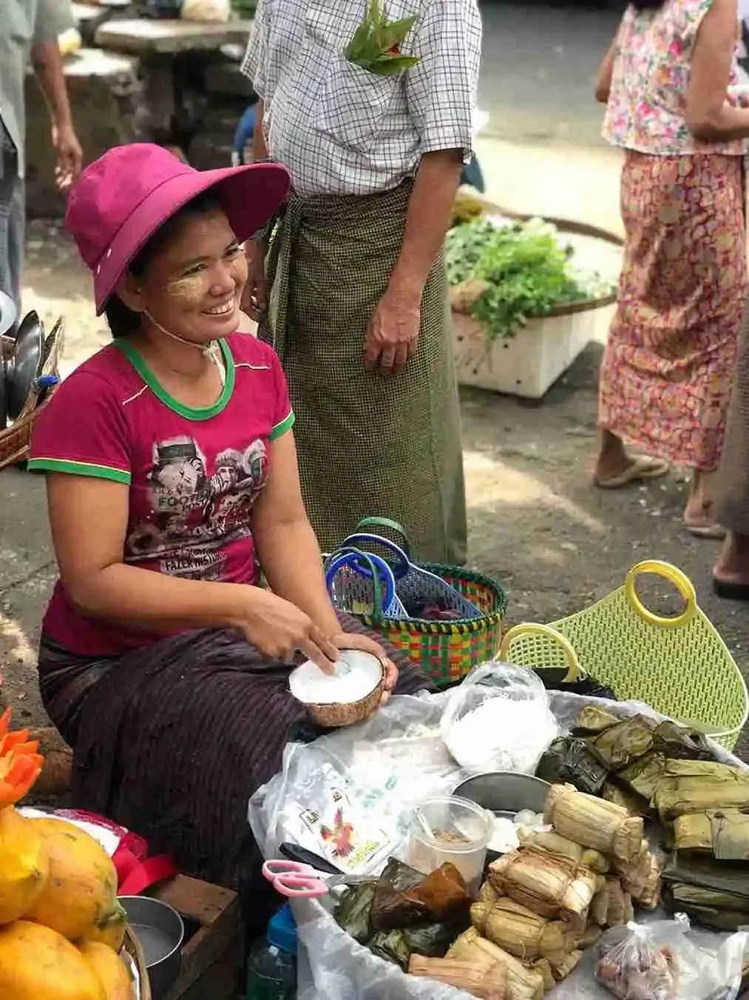
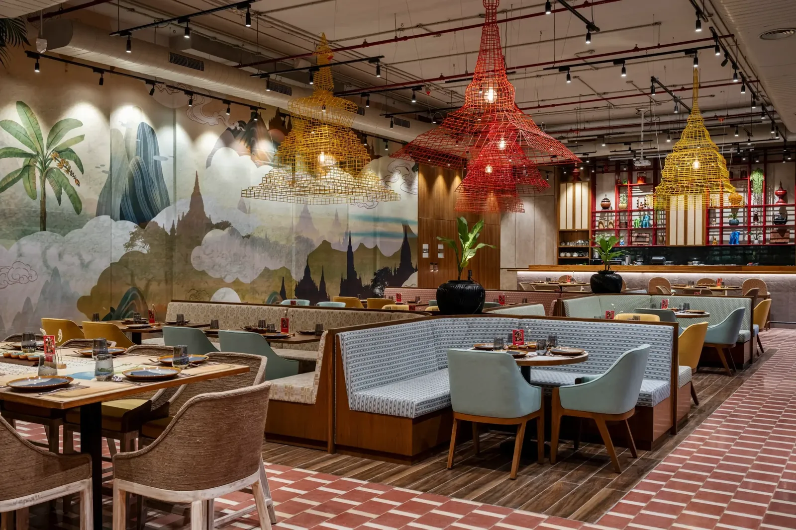
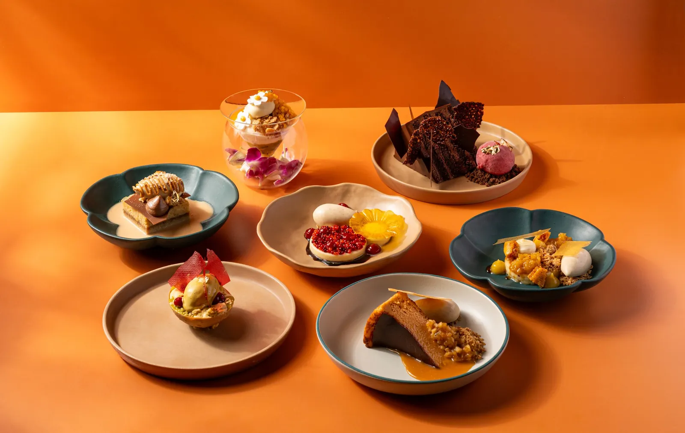

Our story
A tea shop on Front Street.
Burma O'Clock was founded by a team of Burmese natives who grew up in the markets and food stalls of Yangon, and wanted to cook that food somewhere it had never really been cooked.
Yangon
It starts in a market, the way it always does.
Burmese cooking is not learned from books. It is learned standing next to somebody older than you, at a stall or a stove, being told that the onions are not brown enough yet. Our founders learned it in Yangon — a city where breakfast is bought on the street from a pot carried on a shoulder pole, and where a tea shop is somewhere you go to sit for three hours over a glass that costs almost nothing.
They came to the Midwest and found that Burmese food had barely arrived here. There are Thai restaurants on every other block and Burmese ones almost nowhere — even though Burma sits between India, China and Thailand and takes something from each of them without being any of them.
So they opened a room on Front Street in Wheaton and started cooking it properly.


“Every dish at Burma O'Clock tells a story — whether it's the bold spices of our curries or the fresh, tangy flavours of our famous Tea Leaf Salad.”
Burma O'Clock
How we cook
Four things we will not do differently.
-
We ferment our own tea.
Lahpet is the spine of Burmese cooking and there is no shortcut for it. Steamed, pressed, left alone for months. The tea leaf salad is tossed the moment you order it, never before.
-
We wait for the oil to split.
A Burmese curry is finished when the aromatics have fried down far enough that the oil separates and floats clear. You cannot rush it and you cannot fake it, and it is why the curry pots go on in the morning.
-
We don't translate the food into something else.
Moh hinga is not Burmese pho. Lahpet thoke is not a Thai salad. We are not going to describe them as though they were, and we are not going to sweeten them so they land more easily.
-
We explain anything you ask about.
Most people who walk in have never eaten Burmese food. That is the whole point of being here. Ask what something is and you'll get the real answer.


Wheaton
226 W Front Street, one block from City Hall.
Downtown Wheaton is not where anybody expects to find Burmese food. That has turned out to be the best thing about it: almost everyone who eats here is eating this food for the first time, and they leave knowing what mohinga is.
Burmese cuisine has stayed underrepresented in the Midwest for a long time. We would like to be the reason that changes, at least around here.

Start with the tea leaf salad.
Then a curry, a rice, and whichever noodle the table argues about least.